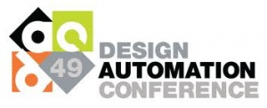

The Fourth International Workshop on Bio-Design Automation (IWBDA) at DAC will bring together researchers from the synthetic biology, systems biology, and design automation communities. The focus is on concepts, methodologies and software tools for the computational analysis of biological systems and the synthesis of biological systems.
Still in its early stages, the field of synthetic biology has been driven by experimental expertise; much of its success can be attributed to the skill of the researchers in specific domains of biology. There has been a concerted effort to assemble repositories of standardized components. However, creating and integrating synthetic components remains an ad hoc process. The field has now reached a stage where it calls for computer-aided design tools. The electronic design automation (EDA) community has unique expertise to contribute to this endeavor. This workshop offers a forum for cross-disciplinary discussion, with the aim of seeding collaboration between the research communities.
Topics of interest include:
- Design methodologies for synthetic biology.
- Standardization of biological components.
- Automated assembly techniques.
- Computer-aided modeling and abstraction techniques.
- Engineering methods inspired by biology.
- Domain specific languages for synthetic biology.
- Data exchange standards and models for synthetic biology.
Dates and Venue
Dates: **NEW DATE** Sunday-Monday, June 3-4
Venue: Moscone Center, San Francisco, CA
|  |
The workshop is part of the 49th ACM/EDAC/IEEE Design Automation Conference (DAC), the premier conference in the field of electronic design automation with over 10,000 attendees. This year DAC will be held June 3-7, 2012 at the Moscone Center, San Francisco, CA.
Sponsors
- Platinum Sponsor
- Gold Sponsors

Abstract Submission
Abstracts should be two pages long, following the ACM SIG Proceedings templates at http://www.acm.org/sigs/publications/proceedings-templates. Indicate whether you would like your abstract considered for a poster presentation, an oral presentation, or both. Include the full names, affiliations and contact information of all authors.
Abstracts will be reviewed by the Program Committee. Those that are selected for oral and poster presentations will distributed to workshop participants and posted on the workshop website.
Abstracts should be submitted by April 2nd at: http://www.easychair.org/conferences/?conf=iwbda2012
Registration, Travel, and Hotel Information
Registration will be through the DAC website.
Registration for DAC 2012 will be available at: DAC Registration.
Please note that the registration deadline for the dinner is May 29th. As of May 21st, 35 of the 60 available dinner seats are full.
Registration rates can be found here.
Also, see travel and hotel information on the DAC website.
Student Support
If you are a student planning on attending the workshop this year, support funds may be available. Please send the following to finances@biodesignautomation.org by April 2nd April 9th, but we will accept applications as long as funds are available:
- Your name
- Affiliation
- Year in school (if appropriate)
- 50-100 word statement detailing why you seek support and how you plan to participate in the workshop (oral presentation, poster, etc).
Requests for support will be evaluated according to the following criteria (in order of importance):
- Quality of abstract/contribution submitted
- Year in school
- Expected travel expenses
Call for Abstracts
Feel free to distribute!

Key Dates
Call for participation published: February 3rd, 2012
Abstract submission deadline: April 2nd, 2012 extended to April 9th, 2012
Abstract acceptance notification: May, 11th
Workshop: **NEW DATE** June 3-4, 2012
Journal Publications
Looking to publish your research in the ACS Synthetic Biology IWBDA 2012 Special Issue?
Ensure your research gets the attention it deserves. ACS Synthetic Biology offers rapid publication of your research findings to scientists around the world. It also has the highest editorial standards and NO author submission, page, color, or cover art charges.
Please consider the following when submitting your manuscript:
- If you wish to submit your research to the ACS Synthetic Biology IWBDA 2012 Special Issue, please consider the following when preparing your manuscript:
- All articles must adhere to ACS Synthetic Biology submission guidelines (http://pubs.acs.org/page/asbcd6/submission/authors.html).
- ACS Synthetic Biology does not impose any submission, publication, page or color charges. Additional Author Benefits can be found at: http://pubs.acs.org/page/4authors/benefits/index.html.
- ACS Synthetic Biology offers ACS AuthorChoice, for authors who would like their published articles to be freely accessible on the Web: http://pubs.acs.org/page/policy/authorchoice/index.html.
- In order to submit a paper for review as part of the collection, you must submit your paper via ACS Paragon Plus, which can be accessed at: https://acs.manuscriptcentral.com/acs.
- IMPORTANT: At the time of submission, please choose “IWBDA 2012” from the “Special Issue Selection” drop-down menu. Also, please state that your submission is intended for the IWBDA Special Issue in your cover letter. Finally, please email publication@biodesignautomation.org to ensure that the IWBDA organizers are aware of your submission.
- The deadline for submitting to the IWBDA 2012 Collection is August 15th 2012. However, extensions may be granted upon request to publication@biodesignautomation.org.
- Please note that all submissions to ACS Synthetic Biology are subject to peer-review and no guarantee of publication or inclusion into the final issue can be made prior to review.
- Please contact the Managing Editor of ACS Synthetic Biology, Ranjini Prithviraj (r_prithviraj@acs.org) if you have any further questions or concerns.
Organizing Committee
Executive Committee:
- General Chair - Natasa Miskov-Zivanov (University of Pittsburgh)
- General Secretary - Laura Adam (Virginia Tech)
- Program Committee Chairs - Xiling Shen (Cornell), Deepak Chandran (University of Washington) and Leonidas Bleris (UTDallas)
- Publication Chair - Chris Myers (University of Utah)
- Industry Liaison Chair - Jonathan Babb (MIT)
- Finance Chair - Aaron Adler and Fusun Yaman (BBN Technologies)
- DAC Liaison - Smita Krishnaswamy (Columbia)
Steering Committee:
- Soha Hassoun (Tufts University)
- Ron Weiss (MIT)
- Marc Riedel (University of Minnesota)
- Douglas Densmore (Boston University)
Program Committee:
- J. Christopher Anderson, UC Berkeley
- Adam Arkin, UC Berkeley
- Jonathan Babb, MIT
- Jacob Beal, BBN Technologies
- Leonidas Bleris, UT Dallas
- Kevin Clancy, Life Technologies
- Douglas Densmore, Boston University
- Drew Endy, Stanford University
- Abishek Garg, Harvard University
- Soha Hassoun, Tufts University
- Mark Horowitz, Stanford University
- Alfonso Jaramillo, Ecole Polytechnique
- Yannis Kaznessis, University of Minnesota
- Eric Klavins, University of Washington
- Tanja Kortemme, UCSF
- Smita Krishnaswamy, Columbia
- Natasa Miskov-Zivanov, Univ. of Pittsburgh
- Kartik Mohanram, Rice
- Chris Myers, University of Utah
- Andrew Phillips, Microsoft Research
- Marc Riedel, University of Minnesota
- Herbert Sauro, University of Washington
- Xiling Shen, Cornell
- Ilias Tagkopoulos, UC Davis
- David Thorsley, University of Washington
- Christopher Voigt, UCSF
- Ron Weiss, MIT
- Erik Winfree, Caltech
- Chris Winstead, Utah State University
Agenda
Invited Speakers:
- Jasmin Fisher, Microsoft, UK
- William Shih, Harvard
- Milan Stojanovic, Columbia
Updated!
Sunday – June 3rd
- 9am – 9:15am: Opening Remarks: Natasa Miskov-Zivanov (General Chair).
- 9:15am – 10:15am: Invited Talk: William Shih, Harvard
- Title: Self-assembly of DNA into nanoscale three-dimensional shapes
- 10:15am – 10:30: Coffee Break
- 10:30 - 12pm: Tech. Talks Session 1 – Topic: CAD Tools for Synthetic Biology
- 1BDA.1: Haiyao Huang, Ernst Oberortner, Douglas Densmore and Allan Kuchinsky.
- Eugene's Enriched Set of Features to Design Synthetic Biological Devices
- 1BDA.2: Jacob Beal, Ron Weiss, Douglas Densmore, Aaron Adler, Evan Appleton, Jonathan Babb, Swapnil Bhatia, Noah Davidsohn, Traci Haddock, Joseph Loyall, Richard Schantz, Viktor Vasilev and Fusun Yaman.
- Results from TASBE
- 1BDA.3 Saurabh Srivastava, Jonathan Kotker, Stephi Hamilton, Paul Ruan, Jeff Tsui, J. Christopher Anderson, Rastislav Bodik, and Sanjit A. Seshia.
- Pathway Synthesis using the Act Ontology
- 1BDA.4 Jole Costanza, Giovanni Carapezza, Claudio Angione, Renato Umeton, Pietro Liò and Giuseppe Nicosia
- metaDesign: Bacterial Strain Design Automation Software
- 1BDA.1: Haiyao Huang, Ernst Oberortner, Douglas Densmore and Allan Kuchinsky.
- 12pm- 1:45pm: Lunch and Poster Session
- 1:45pm – 2:45pm: Tech. Talks Session 2 – Topic: Engineering, Parts, and Standardization
- 2BDA.1 Daniel Ryan and Dimitris Papamichail.
- Gene Variant Library Design for High Throughput Experimentation
- 2BDA.2 Timothy Ham, Zinovii Dmytriv, Hector Plaha, Joanna Chen, Nathan Hillson and Jay Keasling.
- Design, Implementation and Practice of JBEI-ICE: An Open Source Biological Part Registry Platform
- 2BDA.3 Wilbert Copeland and Herbert Sauro.
- Standardizing promoter activity through quantitative measurement of transcriptional dynamics
- 2BDA.1 Daniel Ryan and Dimitris Papamichail.
- 2:45pm – 3:00pm: Coffee Break
- 3:00 – 4:00pm: Invited Talk: Milan Stojanovic, Columbia
- Title: Molecular computing: From games to practical applications
- 4:00pm - 5:00pm: Tech. Talks Session 3 – Topic: Characterization and System Identification
- 3BDA.1 Taek Kang, Jacob White, Eduardo Sontag and Leonidas Bleris.
- Validation of Network Reverse Engineering Using a Benchmark Synthetic Gene Circuit
- 3BDA.2 Paolo Zuliani, Natasa Miskov-Zivanov, James Faeder and Edmund Clarke.
- Model checking for studying timing of events in T cell differentiation
- 3BDA.3 Chih-Hsien Yang, Jesse Wu, Chi Yang, Tao-Hsuan Chang and Chuan-Hsiung Chang.
- Network-Based Genome Design and Engineering with Direct Logical-to-Physical Compilation
- 3BDA.1 Taek Kang, Jacob White, Eduardo Sontag and Leonidas Bleris.
- 6:30pm - 9:30pm: Dinner
Location: Kuleto’s Italian Restaurant, 221 Powell Street, San Francisco, CA 94102
Phone: 415.397.7720
IWBDA Group Dinner: We're planning a dinner for IWBDA attendees Sunday night June 3rd. The dinner will take place at an Italian Restaurant near the convention center. We have a limited number of seats for dinner. We are emailing invitations based on the DAC registration list. To guarantee a seat at the dinner, please register ASAP. Please let us know (email: finances@biodesignautomation.org) if you register for other DAC events as we are giving priority to IWBDA only attendees. As of May 21st, 35 of the 60 available dinner seats are full.
Monday – June 4th
- 10:15am – 10:30: Coffee Break
- 10:30am - 12:00pm: Tech. Talks Session 4 – Topic: BioSimulators
- 4BDA.1 Jason Stevens and Chris Myers.
- Dynamic Modeling of Cellular Populations within iBioSim
- 4BDA.2 Kai-Yuan Chen, Amit Lakhanpal, Pengcheng Bu, Steven Lipkin, Michael Elowitz and Xiling Shen.
- A multi-scale model of stem cell niche formation inside intestine crypts
- 4BDA.3 Stefan Janssen, Loic Pauleve, Yann Ponty, Balaji Raman and Matthias Zytnicki.
- Can Probabilistic Model Checking Explore Ribo-Nucleic Acid Folding Space?
- 4BDA.4 Vishwesh Kulkarni, Hua Jiang, Theerachai Chanyaswad and Marc Riedel.
- A Biomolecular Implementation of Systems Described by Linear and Nonliner ODE's
- 4BDA.1 Jason Stevens and Chris Myers.
- 12:00pm – 1:45pm: Lunch and Poster Session
- 1:45pm - 2:45pm: Invited Talk: Jasmin Fisher, Microsoft, UK
- Title: From Coding the Genome to Algorithms Decoding Life
- 2:45pm – 3:45pm: Tech Talks Session 5 - Biological Circuit Design and Assembly I
- 5BDA.1 Claes Gustafsson, Alan Villalobos, Mark Welch and Jeremy Minshull.
- In Silico Design of Functional DNA Constructs Based on Heuristic Data
- 5BDA.2 Joanna Chen, Rafael Rosengarten, Douglas Densmore, Timothy Ham, Jay Keasling and Nathan Hillson.
- j5 and DeviceEditor: DNA assembly design automation
- 5BDA.3 Guillermo Rodrigo, Thomas Landrain, Boris Kirov, Raissa Estrela, Javier Carrera and Alfonso Jaramillo.
- Automatic design of RNA and transcriptional circuits in E. coli
- 5BDA.1 Claes Gustafsson, Alan Villalobos, Mark Welch and Jeremy Minshull.
- 3:45pm – 4:00pm: Coffee Break
- 4:15pm – 5:15pm: Tech Talks Session 6 - Biological Circuit Design and Assembly II
- 5BDA.4 Bianca J Lam, Federico Katzen, Kevin Clancy, Xiangdong Liu, Nian Liu, Gengxin Chen, Kimberly Wong, Todd Peterson, Antje Pörtner-Taliana
- Integrating Synthetic Gene Assembly and Site-Specific Recombination Cloning
- 5BDA.5 Linh Huynh and Ilias Tagkopoulos.
- Scaling responsively: towards a reusable, modular, automatic gene circuit design
- 5BDA.6 Mona Yousofshahi, Michael Orshansky, Kyongbum Lee and Soha Hassoun.
- Chance-constraint Optimization for Gene Modifications
- 5BDA.4 Bianca J Lam, Federico Katzen, Kevin Clancy, Xiangdong Liu, Nian Liu, Gengxin Chen, Kimberly Wong, Todd Peterson, Antje Pörtner-Taliana
- 5:15pm – 6:15pm: Industrial Panel Session
- 6:15pm – 6:30pm: Closing remarks and post-workshop future planning
Posters
- Yong-Jun Shin, Ali Sayed and Xiling Shen
- Discrete-Time Analysis for Gene Network Modeling
- Gregory Linshiz, Nina Stawski, Nick Elsbree, Jay Keasling and Nathan Hillson
- Development of Biology Friendly Tools for Lab Automation and DNA Construction
- Rishi Ganguly and Douglas Densmore
- Statistical Model Checking Approach in Design and Verification of Genetic Circuits
- Vishwesh Kulkarni, Evgeny Kharisov, Hua Jiang, Marc Riedel and Naira Hovakimyan
- Digital Signal Processing Using Molecular Reactions: Tunable RGB Synchronization
- Sridhar Ranganathan, Kevin Clancy and Todd Peterson
- Genome-scale Metabolic Reconstruction for Synechococcus elongatus PCC 7942
- Jacob Beal and Fusun Yaman
- Toward Automated Design of Cell State Detectors
- Eduardo Monzon, Abiezer Tejeda, Chris Winstead, Chris Myers and Curtis Madsen
- Detecting Multistability in Stochastic Simulations of Gene Networks Using Kernel Density Estimators
- Evan Appleton, Viktor Vasilev, Swapnil Bhatia, Traci Haddock and Douglas Densmore
- Testing-Optimized DNA Assembly Algorithms
- Sean C. Sleight and Herbert M. Sauro
- The Construction of Randomized Genetic Circuits Using Modular BioBrick Assembly
- Smita Krishnaswamy, Bernd Bodenmiller, Garry Nolan and Dana Pe'Er
- Graphical Clustering of High-Throughput Single-Cell Data
Abstracts & Proceedings
- Proceedings:
- William Shih, Harvard
Title: Self-assembly of DNA into nanoscale three-dimensional shapes
Abstract: I will present a general method for solving a key challenge for nanotechnology: programmable self-assembly of complex, three-dimensional nanostructures. Previously, scaffolded DNA origami had been used to build arbitrary flat shapes 100 nm in diameter and almost twice the mass of a ribosome. We have succeeded in building custom three-dimensional structures that can be conceived as stacks of nearly flat layers of DNA. Successful extension from two-dimensions to three-dimensions in this way depended critically on calibration of folding conditions. We also have explored how targeted insertions and deletions of base pairs can cause our DNA bundles to develop twist of either handedness or to curve. The degree of curvature could be quantitatively controlled, and a radius of curvature as tight as 6 nanometers was achieved. This general capability for building complex, three-dimensional nanostructures will pave the way for the manufacture of sophisticated devices bearing features on the nanometer scale.
- Milan Stojanovic, Columbia
Title: Molecular computing: From games to practical applications
Abstract: This talk will focus on two molecular system capable of information processing: (i) Deoxyribozyme-based logic gates and various deoxyribozyme-based molecular automata playing games against human opponents; and (ii) Strand-displacement cascades and their ability to assess presence and absence of surface markers on cells.
- Jasmin Fisher, Microsoft Research Cambridge
Title: From Coding the Genome to Algorithms Decoding Life
Abstract: The decade of genomic revolution following the human genome's sequencing has produced significant medical advances, and yet again, revealed how complicated human biology is, and how much more remains to be understood. Biology is an extraordinary complicated puzzle; we may know some of its pieces but have no clue how they are assembled to orchestrate the symphony of life, which renders the comprehension and analysis of living systems a major challenge. Recent efforts to create executable models of complex biological phenomena - an approach we call Executable Biology - entail great promise for new scientific discoveries, shading new light on the puzzle of life. At the same time, this new wave of the future forces computer science to stretch far and beyond, and in ways never considered before, in order to deal with the enormous complexity observed in biology. This talk will focus on our recent success stories in using formal methods to model cell fate decisions during development and cancer, and on-going efforts to develop dedicated tools for biologists to model cellular processes in a visual-friendly way.
Mailing List
Contact
- General Information: info@biodesignautomation.org
- Program: program@biodesignautomation.org
- Publication: publication@biodesignautomation.org
- Industry Liaison: industry@biodesignautomation.org
- Finances: finances@biodesignautomation.org
Survey
Related Meetings
- Biological Systems Design (BSD-SIG) 2012 @ ISMB 2012 - July 13, 2012 - Long Beach, CA USA
- Critical Assessment of Genetically Engineered Networks
- SynBioCCC
- FutureLabCamp
- Hacteria
- International Bio-Molecular Design Competition
- International Symposium on Nanoscale Architectures (NANOARCH 2012)
- International Workshop on Logic and Synthesis (IWLS 2012) @DAC - June 1 - 3, 2012
Past Years
- 3rd International Workshop on Bio-Design Automation (IWBDA 2011)
- 2nd International Workshop on Bio-Design Automation (IWBDA 2010)
- 1st International Workshop on Bio-Design Automation (IWBDA 2009)
Miscellaneous
- Iowa Wholesale Beer Distributors Association (the other IWBDA!)